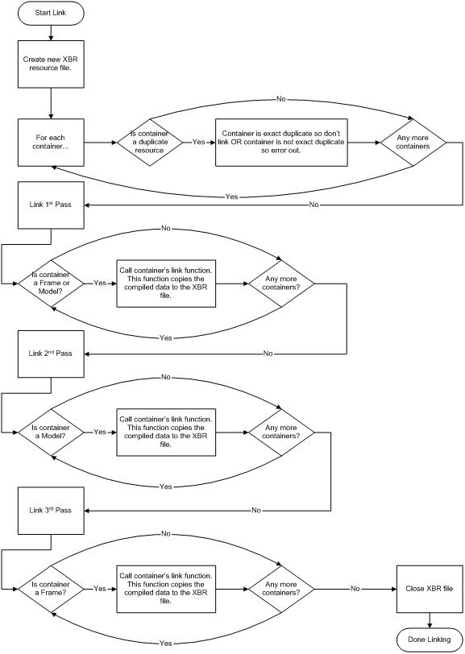

The linker phase is very similar to the compiler phase. Basically, you iterate over the main list of containers and call each container's link function. The main difference between the compiling and linking phase is that you iterate over the list multiple times to handle different situations.

First, iterate over the list and find any duplicate identifiers. If the identifiers are identical and the resource type is identical, tell only one instance of the resource to link in because you don't need both. (There are some cases where a developer may want both resources to link in. In this case, it would be up to the developer to change the behavior of the linker.) If you have two resources with the same identifier but different resource types, a linker error results.
The next step is to link in all resources except the XBRC_FRAME and XBRC_MODEL resources. This is done to remove any order dependencies in the resource file.
We then link in the XBRC_MODEL resources and then the XBRC_FRAME resources.
The main workhorse of the linker is the CBundler class, which is similar to the original CBundler class used by the old Bundler. This class creates a binary file containing Xbox Direct3D resources that reside in both Video (or contiguous) memory (vertex buffers and textures) and System memory (everything else). These resources are loaded into the Xbox in two reads. For details on how this works, see the Xbox Viewer Architecture. The CBundler class ensures that all data requirements are met for the resources so that their memory footprint can be loaded and fixed up and the resources can be used without further work. For example, textures are aligned to the correct memory boundaries to ensure that they can be used by simply calling IDirect3DResource8::Register in Direct3D on the Xbox.